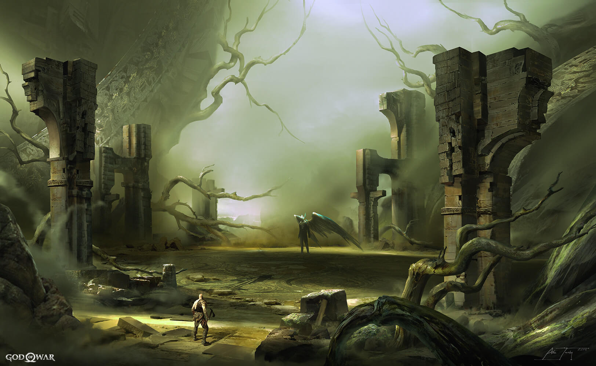

Мидгард
Мидгард - главная локация в God of War (2018). Это одно из девяти царств скандинавской мифологии. Это самый большой из исследуемых регионов. Мидгард означает «золотая середина» и это царство, в котором живут люди и смертные, хотя нередко появляются боги и другие мифологические существа, в первую очередь Ёрмунгандр.
Мидгард был создан из трупа Имира по Одина , Вили и Ве. Важной особенностью Мидгарда является озеро Девяти, большое проходимое озеро с храмом, расположенным на острове в центре. Этот храм считается связующим звеном между всеми Девятью Царствами.
Мидгард также населяет множество диких животных, включая оленей, горных козлов (возможно), кабанов, волков, белок, крыс, лягушек, ящериц, чаек, воронов, рыб, крабов и пещерных трилобитов.
Альфхейм
Яркое королевство Альфхейм украшено богатой и красочной флорой, а также светящейся фауной, которая сверкает на земле и небе королевства эльфов. Художественная архитектура эльфов включает в себя их уникальные светлые кристаллы, камни цвета сапфира, подпитываемые Светом Альфхейма, которые прикрепляются к строениям, чтобы создавать мосты из сплошного света.
В Свете Альфхейма Бифрёст получает свой источник энергии, чтобы путешествовать по мирам через Храм Тира . В то время как Свет находится в доме всех эльфов, светлые и темные подрасы веками воевали за его владение, при этом Свет Альфхейма менял хозяев туда и обратно более двухсот тринадцати раз.
Когда Светлые Эльфы контролируют Свет Альфхейма, Свет сияет свободно, и небеса их царства украшаются синим. Когда он есть у темных эльфов, свет скрывается за каким-то большим растением, и их небеса окрашены в красный цвет.
Тем не менее, Ванир Фрейр, казалось, был тем, кто дал абсолютный контроль над Светом Эльфам Света дольше всего, поскольку светящиеся существа назвали его своим повелителем и предоставили резиденцию Бога в их царстве. Скорее всего, недавнее исчезновение ванов дало темным эльфам преимущество, необходимое им, чтобы вернуть себе Свет.
Альфхейм уже потускнел к тому времени, когда сестра Фрейра Фрейя привела Кратоса и его сына Атрея в царство эльфов, чтобы получить часть Света для своих собственных целей. Поскольку темные эльфы скрывали Свет и любой доступ к нему, боги-аутсайдеры были вынуждены противостоять темным эльфам, чтобы снова высвободить Свет, конфликт, который закончился кончиной Короля темных эльфов.
Йотунхейм
Ётунхейм был найден и назван Бергельмиром и его женой, единственными Ётнарами, оставшимися в живых после убийства Одином их праотца Имира. С тех пор он стал святилищем Морозных гигантов, домом, где они могли расти и процветать. Опасаясь свою пророчил гибель в руках гигантов приходят Рагнарок, Один и асы начали безжалостно убивать их всех на протяжении девяти-Realms. На грани исчезновения Гиганты отступили обратно в Йотунхейм с помощью Тира., которые не принимали участия в убийствах и вместо этого помогли им в их побеге, лишив всех доступа к царству всех девяти, кроме двух последних в Мидгарде, хотя одному на самой высокой вершине Мидгарда требовалась священная руна, чтобы активировать его. Другой был спрятан в Царстве Между Царствами, и Храм Тира, который нужно было перевернуть, чтобы восстановить, и украшенные драгоценными камнями глаза, которыми гиганты одарили своих наперсников.
Страж врат Йотунхейма - Олень Дурадур, его статуя, охраняющая вход в Сердце Горы в Мидгарде, где на ее вершине находятся единственные врата в Царство Гигантов, оставшиеся после того, как Йотнар успешно сбежал из Среднего Царства.
Пейзаж Йотунхейма состоит из больших гор, таких высоких, что их вершины возвышаются над облаками. Единственное внутреннее строение, которое мы видели до сих пор, - это большая комната, построенная внутри горы в форме руки, самой высокой вершины Девяти миров. Комната украшена статуями и резными фигурками гигантов, написанными пророчествами на стенах и фреской, изображающей историю « Локи ».
После ухода всех гигантов, оставшихся в Мидгарде, Йотунхейм стал могилой расы Йотнаров, их трупы усеивали горы, пока они ожидали возвращения своего хранителя.
Хельхейм
Царство Мертвых - это кошмарная страна глубокой тьмы и неумолимого холода, запертая в состоянии постоянной глубокой заморозки, экстремальные температуры настолько смертельны, что даже сам Один не может выжить там очень долго. Те, кто умирают как преступники, от болезней, несчастий и старости, в конечном итоге проводят вечность в Хельхейме, где их вечно мучают видения своего прошлого.
Единственный известный вид растений, который может расти в Хельхейме, - это, кажется, ежевика Хель, толстая, черная, похожая на виноградную лозу колючую растительность, которая восприимчива только к огню Клинков Хаоса . Вдобавок было заявлено , что Маттугр Хельсон , тролль , родился в Хельхейме, что предполагает, что местная жизнь там возможна, хотя и чрезвычайно трудна.
В царстве есть темные облака, покрывающие небо, тонкий изумрудный туман и туман, ледяные горы, сооружения из камня и металлические статуи в форме людей. Вездесущее ветровое течение, известное как Ветры Хеля, всегда дует по всему королевству. Существуют сферические устройства, способные сдерживать ветер, которые обычно используются в качестве дверных замков. Несмотря на невероятный холод и обильный лед, из водопадов, где расположен Храм Тыра , текут незамерзшие реки . Там можно пересечь эти реки на корабле.
Архитектура Хельхейма состоит из мостов, ворот и зданий из черного камня черного дерева, большая часть которых покрыта толстыми слоями льда и снега. Большинство металлических статуй, разбросанных по всему миру, изображают людей в плачущих состояниях, а другие держат в руках удерживающие ветер сферы. Там также две запечатаны Скрытые палаты Одина, один , где Ворон король заточил Валькирия Rota , и тот , где он спрятал часть Shrine Jötnar составил около Тира. Повсюду в королевстве есть разные места, которые обычно скрывают редкие и уникальные сокровища.
Группы диких мародеров-нежити, включая Хель-Ходоков , Путешественников и Ревенантов, часто можно найти бродящими по бескрайним пустошам, предположительно в поисках новых жертв или, возможно, способа сбежать обратно в физический мир. Кроме того, можно встретить и других существ, таких как Кошмары и Огры . Из-за этого многие часто считают Хельхейм местом, где царит беззаконие и насилие.
Души умерших должны пройти через Мост Проклятых. Этот мост охраняет Хранитель Моста Маттугр Хельсон , уроженец Хельхейма, тролль, чья работа состоит в том, чтобы проверять каждую душу, чтобы убедиться, что человек, проходящий мимо, действительно мертв.
Мимо самого моста жители обычно терзаются видениями своего прошлого, создаваемыми изумрудным туманом, обретающим форму. В этом месте возвышается самое высокое здание во всем Хельхейме, где сидит огромный серебряный орел Хресвельг и просто наблюдает за Хельхеймом и его обитателями.
Муспельхейм
Муспельхейм известен как «Царство Огня» и считается источником тепла в Девяти Царствах. Это дом Сурта Храброго и его потомков, Огненных гигантов, которым предсказано сжечь и уничтожить Царство богов Асгарда во время Рагнарёка. Поскольку их единственная цель - вызвать Рагнарёка, Мимир отметил, что ни один Огненный гигант не появится, пока он не начнется.
Его ландшафт состоит из огненных вулканов, извергающих пепел и угли, которые чернеют небо, извергающих лавовые потоки, образующие реки из расплавленных камней, и что-то вроде тотемов огненных троллей, похороненных в земле.
Кратос и Атрей могут собрать все шифры Муспельхейма в Мидгарде и Альфхейме , чтобы получить доступ к огненному миру и пересечь гору, чтобы забрать эксклюзивные материалы королевства, такие как тлеющий уголь и герб пламени.
На самой вершине горы, где проходят испытания Муспельхейма, была заточена Валькирия Гондул.

Нифльхейм
Нифльхейм известен как «Царство тумана», изначально это царство бесконечного снега, ветра, льда и тумана. Однако амбициозный гном- алхимик по имени Ивальди решил основать мастерскую в стране тумана и нашел способ использовать всю морозную силу Нифльхейма, создавая чудеса, потрясшие царства как людей, так и богов .
К сожалению, лидеру озиров , Одину , не понравилась идея о том, что гномы создают устройства, которые бросают вызов его силе, поэтому он вмешался в творения Ивальди, на что гном яростно ответил. По мере обострения ситуации Ивальди начал вмешиваться с силами, которых он не должен был иметь, и в конечном итоге проклял все царство тумана, изменив его туман, чтобы отравить любого, кто его вдохнул, проклятие, первой жертвой которого стал Ивальди.
Снега и льда нигде не видно, ветер больше не дует, а теперь уже смертельный туман испускает неприятный запах. Кратос и Атрей могут собрать все шифры Нифльхейма в Мидгарде , чтобы получить доступ к миру тумана и пройти через ныне заброшенную мастерскую, чтобы получить эксклюзивные материалы этого царства, такие как Mist Echoes и Niflheim Alloy.
Мастерская Ивальди: единственное место, которое можно исследовать на сегодняшний день, мастерская представляет собой лабиринт, заполненный сундуками, содержащими редкие материалы и все еще действующие смертельные ловушки, оставленные рядом с нежитью, существами Сейдра, Хель-Ходоками и бешеными животными.
Ядовитый туман ограничивает путешествия по мастерской, истощая здоровье Кратоса по прошествии определенного периода времени, которое можно частично восполнить, открыв сундуки. Гном Синдри , которого можно найти у входа в мастерскую, также может создавать оборудование, уменьшающее эффекты тумана.
